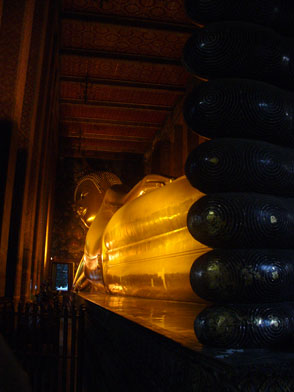

December 6, 2005
Hi Folks,
Enjoying Bangkok and thinking about all you folks getting in the Holiday sprit. Even China town here sells some of the decorations, though little of it is being used. (Right: River boat passengers).
Here's what happened with my first run to get a visa for Myanmar.
Started off yesterday after doing my homework to find just where the Myanmar Embassy is located. Not bad, looks like a river boat on the Chao Phraya (the main river running through Bangkok) to the Central Pier is within a mile of the place, and one can walk the rest of the way. It's a nice day, and riding on the boat as it passes by the Royal Palace and Wat Pho sounds like a great idea. Walking from the guest house takes me through the local market past the meat and poultry area, over a foot bridge, past the flower and live seafood market, and finally to the dock in less than 10 minutes. As luck would have it, a river boat shows up after a few minutes wait, and it's got an orange "express" flag, meaning it bypasses some of the stations. Central Pier is the end of the line, so I hop on with no problem. Several pictures later, a clearly marked sign informs me it's time to hop off the boat and start walking.
These free maps are notoriously not to scale, so I check for directions with the parking attendant at a new modern stationary store. A communication problem sends me inside, where they tell me to keep walking down the road. Leaving the store, the same parking attendant comes up to me and hands me a note: directions to the Myanmar Embassy, and the words "5 minute walk." Another case of locals trying to help out a foreign visitor to SE Asia. (Right:Royal Palace and What Pho from river).
Ten minutes later I'm ringing the buzzer at the Myanmar Consulate. "Tomorrow 9 AM." Is the only English the guard says. Thanking him, I pull out the map and decide how to walk to China Town. Almost immediately, a young gal walking by asks if she can help. She warns it's too far to walk -- maybe one hour. "Thank You -- the Embassy is closed, so I have lots of time", I say. "Yes, the King's Birthday Celebration, so National Holiday," is her reply.
Many shops are closed on the outskirts of China town, but in the central area enough shops are open to find much needed items to repair both my laptop backpack and waist sack. First reward of the day.
After grabbing a drink and walking towards the river, along comes a #53 bus. The number is one that heads into my neighborhood, so hopping aboard seems natural. Am I really learning the city? The bus turns a few corners and suddenly stops right next to Wat Pho, home of the 150-foot long Reclining Buddha and the oldest Wat in Bangkok. Is admission free today, as it's the King's Birthday? The doors of the bus close behind me. The Royal Palace, right next door, was already closed, so I spend an hour or so taking pictures in the Wat at sunset and recalling my first visit there. Second reward of the day.
From Wat Pho it's back to the river for a boat home, but a backpacker asks for directions to Khao San road. I get off with him, show him the path, and he says he then wants to see the fireworks at the Royal Grounds. Third reward of the day is a fantastic fireworks display. Only a visa request submittal could have made it better.
To be continued . . . .
Bill
=================================
"Travel is Fatal to Bigotry, Prejudice, and Narrow-minded ness" ....
attributed to Mark Twain